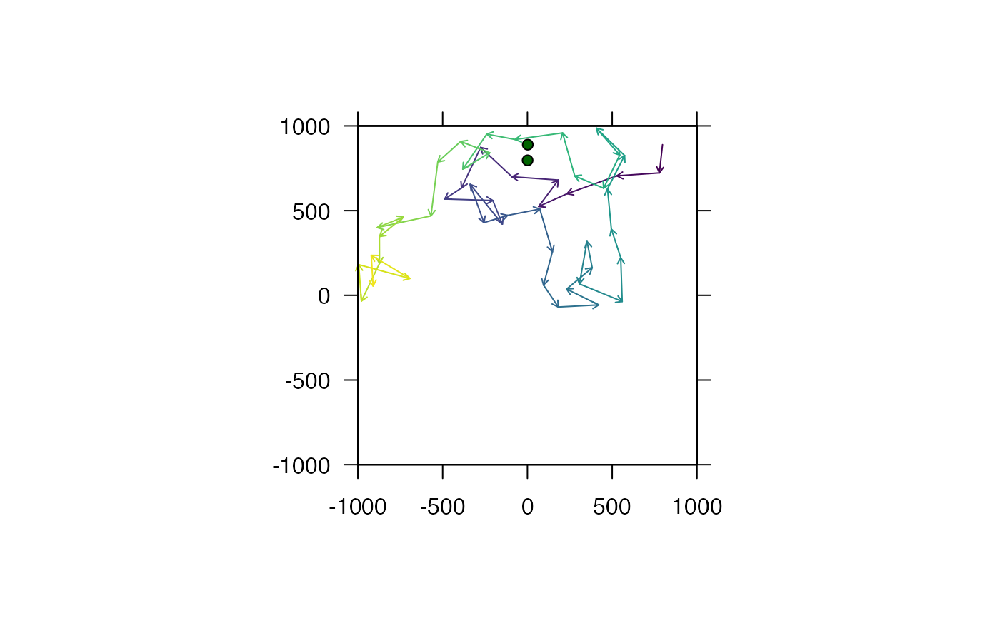
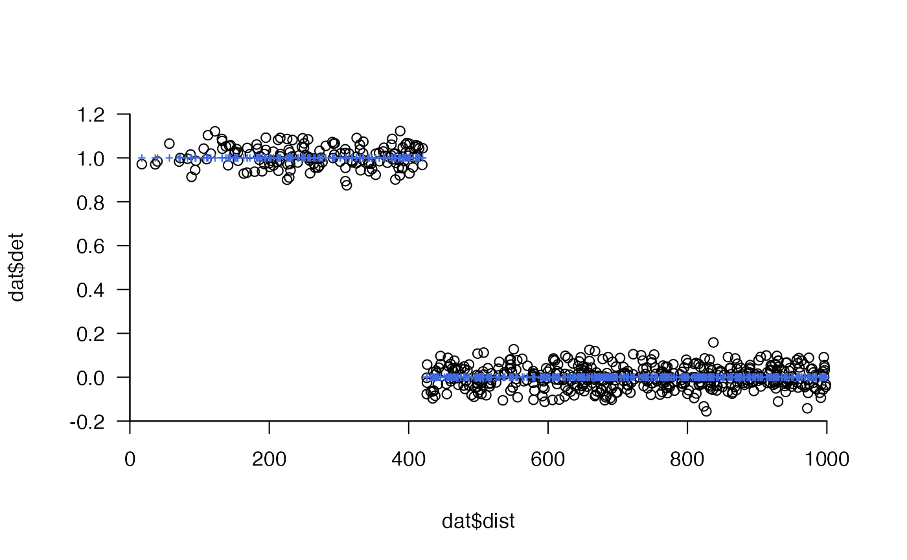

This function converts a matrix of detections (0, 1) by time stamp and receiver into a dataframe.
make_df_detections(
acoustics,
only_keep_detections = FALSE,
set_names = FALSE,
as_POSIXct = as.POSIXct
)A detection matrix (time stamps x receivers) in which the cells define whether (1) or not (0) a detection was made at each time stamp/receiver combination. `Meaningful' time stamps and receiver IDs can be taken from the row and column names of this matrix, if specified (see set_names).
A logical variable that defines whether or not to retain only observations that correspond to detections. (If only_keep_detections = FALSE, the returned dataframe includes time stamps without detections.)
A logical variable that defines whether or not to take the row and column names of acoustics as the time stamps and receiver IDs. (If set_names = FALSE, time stamps and receiver IDs are simply given as integer vectors of 1 to the number of rows or columns respectively.)
If set_names = TRUE, as_POSIXct is a function that converts the row names of acoustics into POSIXct time stamps.
The function returns a dataframe with time stamps (`timestamp') and receivers (`receiver_id'). If set_names = FALSE, these are integer vectors that match the dimensions of acoustics. Otherwise they are are taken from row and column names of acoustics. In this case, if as_POSIXct is defined, time stamps are returned in POSIXct format and receivers are returned as a factor. If only_keep_detections = FALSE, the dataframe also includes a `detection' column that defines whether (1) or not (0) a detection was made for each observation; otherwise, this column is dropped (mirroring real-world data).
#### Define detection matrix
# Simulate array
array <- sim_array(boundaries = raster::extent(-1000, 1000, -1000, 1000),
n_receivers = 24, seed = 1)
#> flapper::sim_array() called (@ 2023-02-19 15:02:22)...
#> ... Defining area...
#> CRS of area is NA.
#> ... Incorporating receivers...
#> ... ... Simulating receivers...
#> ... Plotting array...
#> prettyGraphics::pretty_map() CRS taken as: 'NA'.
#> ... Defining outputs...
#> ... flapper::sim_array() call completed (@ 2023-02-19 15:02:22) after ~0 minutes.
# Simulate movement in this area
path <- sim_path_sa(n = 50, area = array$array$area, seed = 1)
#> flapper::sim_path_sa() called (@ 2023-02-19 15:02:22)...
#> ... Setting up simulation...
#> ... Simulating movement path...
#>
|
| | 0%
|
|= | 2%
|
|=== | 4%
|
|==== | 6%
|
|====== | 8%
|
|======= | 10%
|
|======== | 12%
|
|========== | 14%
|
|=========== | 16%
|
|============= | 18%
|
|============== | 20%
|
|=============== | 22%
|
|================= | 24%
|
|================== | 26%
|
|==================== | 28%
|
|===================== | 30%
|
|====================== | 32%
|
|======================== | 34%
|
|========================= | 36%
|
|=========================== | 38%
|
|============================ | 40%
|
|============================= | 42%
|
|=============================== | 44%
|
|================================ | 46%
|
|================================== | 48%
|
|=================================== | 50%
|
|==================================== | 52%
|
|====================================== | 54%
|
|======================================= | 56%
|
|========================================= | 58%
|
|========================================== | 60%
|
|=========================================== | 62%
|
|============================================= | 64%
|
|============================================== | 66%
|
|================================================ | 68%
|
|================================================= | 70%
|
|================================================== | 72%
|
|==================================================== | 74%
|
|===================================================== | 76%
|
|======================================================= | 78%
|
|======================================================== | 80%
|
|========================================================= | 82%
|
|=========================================================== | 84%
|
|============================================================ | 86%
|
|============================================================== | 88%
|
|=============================================================== | 90%
|
|================================================================ | 92%
|
|================================================================== | 94%
|
|=================================================================== | 96%
|
|===================================================================== | 98%
|
|======================================================================| 100%... Plotting simulated path...
#> Spatial layers do not have identical CRS strings
#> prettyGraphics::pretty_map() CRS taken as: 'NA'.

#> ... flapper::sim_path_sa() call completed (@ 2023-02-19 15:02:22) after ~0 minutes.
# Simulate a detection matrix
detections <- sim_detections(n = 100,
path = path$xy_mat,
xy = sp::coordinates(array$array$xy),
calc_detection_pr = function(dist) ifelse(dist < 425, 1, 0),
)
#> flapper::sim_detections() called (@ 2023-02-19 15:02:22)...
#> ... Setting up simulation...
#> ... Calculating distances...
#> ... Calculating probabilities...
#> ... Simulating detections...
#> ... Plotting detections...
#> Warning: "n" is not a graphical parameter
#> Warning: "n" is not a graphical parameter
#> Warning: "n" is not a graphical parameter

#> ... flapper::simulate_detections() call completed (@ 2023-02-19 15:02:22) after ~0 minutes.
# Extract matrix
mat <- detections$det_mat
# Define row names
rownames(mat) <-
as.character(
seq(as.POSIXct("2016-01-01"), by = "2 mins", length.out = nrow(mat))
)
#### Examples: convert the matrix to a dataframe
utils::str(mat)
#> int [1:50, 1:24] 0 0 0 0 0 0 0 0 0 0 ...
#> - attr(*, "dimnames")=List of 2
#> ..$ : chr [1:50] "2016-01-01 00:00:00" "2016-01-01 00:02:00" "2016-01-01 00:04:00" "2016-01-01 00:06:00" ...
#> ..$ : NULL
dat <- make_df_detections(mat)
utils::str(dat)
#> 'data.frame': 1200 obs. of 3 variables:
#> $ timestamp : int 1 1 1 1 1 1 1 1 1 1 ...
#> $ receiver_id: int 1 2 3 4 5 6 7 8 9 10 ...
#> $ detection : int 0 0 0 0 0 0 0 0 0 0 ...
dat <- make_df_detections(mat, only_keep_detections = TRUE)
utils::str(dat)
#> 'data.frame': 160 obs. of 2 variables:
#> $ timestamp : int 2 2 3 3 3 4 4 4 4 5 ...
#> $ receiver_id: int 15 17 13 15 17 8 13 15 17 8 ...
dat <- make_df_detections(mat, only_keep_detections = TRUE, set_names = TRUE)
#> 'set_names' not implemented for columns: 'acoustics' does not contain column names.
utils::str(dat)
#> 'data.frame': 160 obs. of 2 variables:
#> $ timestamp : POSIXct, format: "2016-01-01 00:02:00" "2016-01-01 00:02:00" ...
#> $ receiver_id: int 15 17 13 15 17 8 13 15 17 8 ...